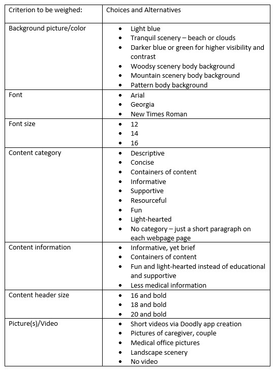
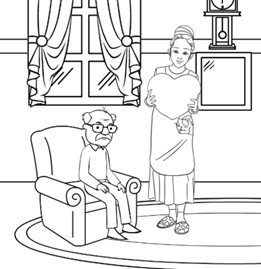

Project Based Analysis Report: click to view document
Section 1
Alzheimer’s Disease and Dementia awareness is something that I am passionate about. Not only have
I seen it in my clinical background but have experienced it with relatives. The toll it takes on the caregivers
is heartbreaking. For my senior project I would like to create a website for the caregivers of Alzheimer’s and
Dementia patients. My purpose for the website is to provide education on the disease, as well as a list of local
support agency resources for the caregiver to reach out for additional help. I would also like to include nutrition
tips or memory and brain engaging activities, and possibly a blog from a neurocognitive specialist or memory assessment
provider. I see this website as an opportunity to educate and remind caregivers they are not alone in this. Many caregivers
I have seen in the past are depressed or on the verge of depression and are stressed and overwhelmed.
To develop this website, I will mostly use HTML and CSS. This project will involve a lot of research in finding local resources
and information on the disease itself. It will also involves making sure the appearance of the website has a user-friendly appearance
and it easily navigable. The website must be brief to keep the user’s attention with a language that is simple and not overly clinical.
If I could post this website, I would ask the local Memory Assessment Clinic to add the link to their patient’s care guide, but I understand
that would have to go through the clinic’s Marketing and Compliance departments first. I could also ask the local Council on Aging office to
add it to their resource care page. Of course, with something of this magnitude, I would need medical advice on making sure the information on
my website is medically correct and accurate.
Section 2
The project’s objective is to provide education and resources for the caregivers of Alzheimer’s and Dementia patients. The website will
be grouped by categories which will link to additional pages. The home page of the website will be brief with short description of the disease and
disorder as well as an encouraging post reminding the caregiver there is help available. The second link will provide more information on the condition
with signs and symptoms and possible tests used to determine the disorder. The third link will list local resources the caregiver could reach out to for
sitter services, transportation services, and behavioral health providers. The third link will have resources for brain games such as printable crossword
puzzles or word find and hopefully, a short chair yoga video. I also like to include a short blog written by a specialist to either offer encouragement or
give a deeper dive into the disease/disorder.
This project will require a huge amount of research time as well as making sure the HTML and CSS code portray the appearance needed without overstimulating
a possibly overwhelmed caretaker.
Section 3
Besides determining what was going to be the focus of my website – whether sales or service, I had to decide how I wanted to present the format of
the website. Because many Alzheimer’s and Dementia patients are older, I want the format of the website to be easy on the eyes and not too busy or stimulating.
I would like a background color that would be calming and peaceful such as a light blue or something representative of a tranquil beach or relaxing scenery. For
the font, I would like a font that is easily readable. I will probably choose Arial as it is a commonly used font that is easy to read. Being consistent with my
font size (other than headings) is also important to make the webpage less busy. Font size will most likely be 14 and color of font will be dependent upon the final
background color chosen. It will most definitely need to stand out.
Also important for this website is to provide concise, yet informational content that is not too lengthy which may cause the reader to scan past the content. To do this,
I would like to break up any content in smaller chunks of paragraphs. Headings for these categorized areas will be bold with just a slightly larger font size, but same
color. Whitespace will be added between lengthy content to help create a clean space and allow a rest for the eyes. I will also add pictures to break up the content and
give the webpage some interest.
Section 4

Section 5
The background is important feature to the web design. The darker blue or green will help will higher visibility of the content. It will help to emphasize the container of
content and bring focus to the material. The weakness of using plain colors in the background is that it is a bit boring and uninteresting. The woodsy and mountain picture theme will be
pretty and tranquil but may give the perception of being a bit dark when I am going for more of an uplifting, lighter feel to the webpage.
The most used font in web design is Arial, but Georgia and New Times Roman are often used as alternatives. Arial is a personal favorite, but I have also used Georgia in the past. I feel
Georgia would be my second choose. New Times Roman would be sufficient, but not as outstanding as the other choices. New Times Roman would give it a more formal look and feel, which is
straying for the perception I would like to give the webpage.
Font size 12 is common in web design but may be too small and harder to read for a tired or elderly caregiver. Font size 16 may be too large and create a look that is too busy when content
is added.
When considering this website, I had to determine what type of content I should add. Information with resources was my first thought, but other alternatives could be something fun and light-hearted.
The content category could be something fun and comical with light-hearted stories to bring an uplifting type of mood. It could be something of more of an escape instead of resourceful and informative.
Although this may seem uplifting, the main purpose of the website will be to let the caregiver know there are resources available and how to find them. Although fun may be an escape, there are many other
ways to mentally escape rather than scrolling through a website. Content headers could also be left blank with no categories. Although this may make for less text in the webpage, it may look a little
disorganized and harder to skim the page for a particular content.
Content information is similar to content category. The content I intend for this website will be helpful, resourceful, and uplifting. Although fun and light-hearted would be an escape for the caregiver’s
current situation, there are many other things the caregiver can do rather than skimming through a website. My original focus for this site is to provide resources and disease/disorder information and a reminder
that the caregiver is not in this alone. An alternative to the content information was to create a website with resources, but not add any medical information such as disease process and signs and symptoms. Although
the resources are a good focus alone, having some information on the disease/disorder may be helpful to a non-medical caregiver.
Content headers are good to use to separate the contents of a webpage. They should stand out but not be overwhelming. The main header is usually the largest font size and content header is usually just a size larger than the content text. Font 18 and 20 are not the next size up from the font size I want for this webpage. Although the bold 18 and 20font would certainly stand out, it would create a harsher look to the webpage.
Pictures and video are important to a web design. They break up the content and provide a clue to the text material. It is important to not bring in a picture or video that is distracting or add too many pictures that would make the web page chaotic and busy. When considering alternatives to pictures of sweet couples or couples on walks, exercising, etc., I considered adding pictures of patients at doctor’s
offices or having medical exams done. I think this is too much of a reality feel, though, and strays away from the websites purpose. Landscape scenery would be beautiful and offer the serenity feel I am hoping for, but do not add any value to the content. Although leaving a video out of the web page would make for an easier coding/build, it will not help to emphasize the content and therefore, also lacks the value needed.
Section 6
I think a light blue background possibly with clouds will promote a peaceful scene. I am hesitant with this type of background only because when one thinks of heaven they often think of clouds and when one thinks of heaven, one thinks about life after death. I want to relay the feeling of hope and not death. I may only opt for a solid light blue background. Tranquil scenery such as the beach or water landscapes may be a better option because they promote the feeling of relaxation and peace. One example is a lake on a foggy morning. The stillness of the lake fosters the stillness and quietness a caregiver long for. A beach scene with smooth, rolling waves simulate a peaceful, rhythmic feeling. The body background will be the serene, tranquil image while the content background will have the information text.
Arial is one of the most popular fonts in web design and has been for decades. It is easy to read and does not complicate the look of the webpage. Arial will be the continuous font throughout the webpages to create a clean and consistent look.
Although font size 12 may be the most common, I would like to increase it a size up to 14 to make the text just a little bit larger for easier reading. I think the larger size will be less straining and make for a more welcoming design.
The content category will be concise and descriptive of the content below it. The content category will hopefully be limited to three words or less. Wordy content headers are often overlooked and busy looking. This webpage should not be overly complicated and time-consuming for the user.
Header size will be font size 16. Too large a font will not transition smoothly. Since content area font size is 14, the next size up 16 will create a smoother, cleaner transition.
Pictures and video will break up the content area and help to emphasize the topic. Doodly app provides a way to create a short-animated video to highlight some main points of the topic. Pictures added to the webpage of couples holding hands or engaging in activities will help relay the encouragement and positive feeling and purpose of the website.
Section 7
Finding the correct shade of blue or tranquil background may take some time. After finding the correct shade of blue and hexcode, I can enter the correct command line in my code. At the moment, I am looking at #81b4eb as the main background color. It has a Red value of 129, Green value of 180, and a blue value of 235. Complimentary color to this blue would be #ebb881.
This may not look as serene as I am hoping it would look, so I may need to play around with the colors a bit more. Possibly a background color of #81b4eb with a content background color of #cbdff5.
Once I experiment with the dominant and complimentary colors, I will add them to my css style sheet.
Google fonts and fonts.com display the look of various fonts and sizes which will help me narrow down the right font choice and size. Arial monotype and Arial Unicode are both possible options. Arial light and Arial will help with the clean, simple look I hope to give the webpage.
These may not be open source fonts, so I will need to determine if I can add them or use only Arial font. Once determined, I can add them to the html body code.
These may not be open source fonts, so I will need to determine if I can add them or use only Arial font. Once determined, I can add them to the html body code.
For the content category, I am aiming for resourceful and information areas of content. Content information will be dependent of my research. Currently, I am hoping for disease/disorder information, local resources, meet the provider blog, and a word of encouragement.
To keep the webpage clean and ensure a smooth transition to the content information, I am only going up one font size from content text.
I have purchased and downloaded the Doodly app to help me come up with short (<30 seconds) videos to relay highlighted information. After content is entered, I can make these short videos that will bring emphasis to the webpage. I will also try to take or find pictures of couples holding hands or engaging in outdoor activities.

Section 8
I think the decisions I made regarding this website will help me to meet the project’s objective. It may take some trial and error in finding the right colors and images, but it should achieve what my envisioned website. There will most likely be tweaking along the way, but I am hopeful for a website that will bring a little hope to a hardworking caregiver.